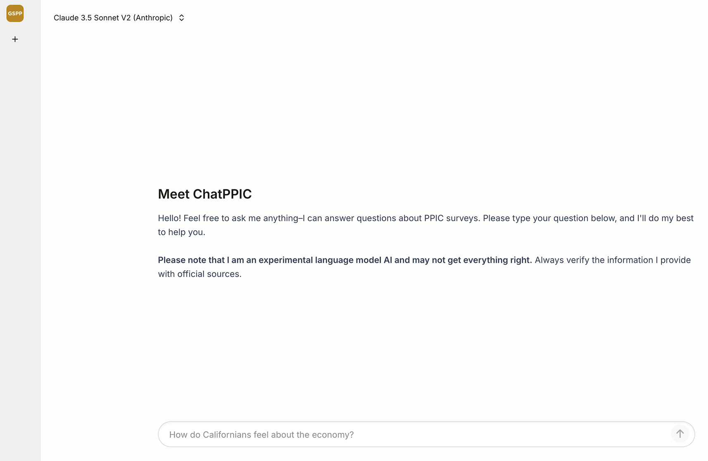
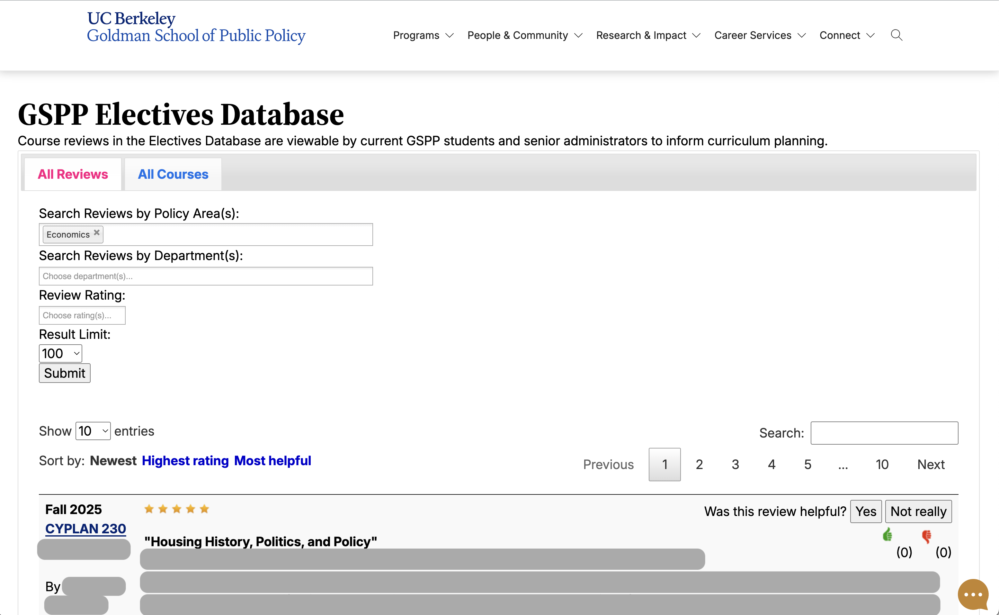
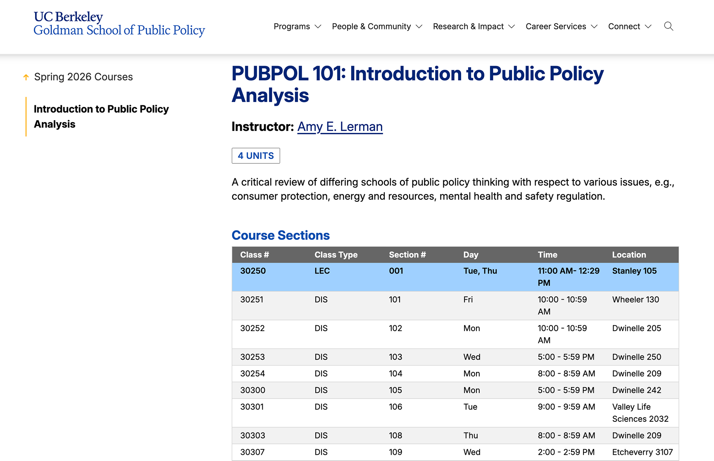

Projects
-
ChatPPIC

- React
- Laravel
- TypeScript
- Python
- AWS
ChatPPIC is a RAG-enhanced AI chatbot that answers the general public's questions about California public opinion based on extensive surveys from the Public Policy Institute of California (PPIC). I led a team of designers and engineers that built the Laravel/React web application from scratch. I developed custom hooks to call AWS Bedrock's RetrieveAndGenerate API and allowed users to configure custom hyperparameters depending on the foundation model they selected.
One of the main challenges with this project was cleaning and preparing the dataset for RAG ingestion. After scraping PPIC's website, I wrote custom scripts to tag metadata, including titles and dates, that helped the foundation model generate better source material. We also implemented reranking to help improve the accuracy and relevancy of the generated responses.
-
Electives Database Modernization

- PHP
- JavaScript
- SQL
- ExpressionEngine
GSPP has long maintained a web application where current students can write reviews of their elective courses. Newly admitted and current students can then browse these reviews to help them determine which electives to enroll in.
The 10-year-old system recently required a major overhaul in order to continue allowing students to submit reviews. Improvements include:
- Automatically discovering and populating all elective courses with GSPP students via the SIS API
- Creating GSPP Auth and ExpressionEngine accounts for new students
- Implementing modern models with custom encrypted data types to keep student enrollment data secure
- Reducing load time from 30 seconds to less than 3 seconds.
-
GSPP Course Catalog

- PHP
- JavaScript
- SQL
- ExpressionEngine
Every semester, GSPP program managers have to schedule hundreds of class sections with many moving parts. Prior to this project, they also had to maintain a manual Google Doc that listed all GSPP courses, organized by level and degree program.
I designed and implemented an ExpressionEngine addon that calls multiple Berkeley SIS API endpoints to automatically discover GSPP classes and render them into an online course catalog. This script runs on a nightly basis via a server cron job, ensuring classes stay up to date. Now, course schedulers only have to update one system with the class schedule, and students have a more accessible source to discover GSPP courses.